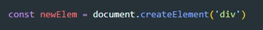

Подключение осуществляется с помощью методов
querySelector() - в качестве входного параметра указывается селектор элемента. Возвращает объект (элемент)
querySelectorAll() - в качестве входного параметра указывается селектор элементов. Возвращает коллекцию объектов (псевдомассив)
Примеры:
Для того что бы получить доступ к стилям элемента, мы обращаемся к нему и применяем метод style, далее ставим точку и указываем то свойство которое нам нужно.
ВАЖНО - в JS нельзя в именах использовать тире, поэтому в указаниях свойства CSS надо использовать принцип camelCase
Пример
getComputedStyle() - метод который возвращает объект со всеми стилями элемента. Метод принимает один обязательный аргумент и второе не обязательный. Первый - это элемент стили которого надо получить. Второй - псевдоэлемент (after, before) стили которого нужно посмотреть
Для получения содержимого этомента, т.е. до того что заключено в теге можно получить используя два метода
innerHTML - позволяет добавлять шаблонные строки
textContent - получает текст заключенный в тег

Обращаемся к элементу, через точку прописываем его свойство и далее что хотим с ним, то и делаем
C помощью метода classList мы можем манипулировать классами элемента:
add - добавить класс
remove - удалить класс
contain - проверить наличие (вернется либо false либо true)
toggle - если класс есть то он удалится, если его нет то добавится
Все атрибуты, начинающиеся с префикса «data-», зарезервированы для использования программистами. Они доступны в свойстве dataset.
Например, если у elem есть атрибут "data-about", то обратиться к нему можно как elem.dataset.about.

Атрибуты, состоящие из нескольких слов, к примеру data-order-state, становятся свойствами, записанными с помощью верблюжьей нотации: dataset.orderState
Методы для работы с атрибутами:
elem.hasAttribute(name) – проверить на наличие.
elem.getAttribute(name) – получить значение.
elem.setAttribute(name, value) – установить значение.
elem.removeAttribute(name) – удалить атрибут
elem.attributes – это коллекция всех атрибутов
Объект document и его элементы являются объектами Node. Класс Node имеет следующие свойства:
Существует так же свойство children которое возвращает массив дочерних ЭЛЕМЕНТОВ, не Node узлов, а именно элементов. Что бы обратиться к определенному элементу можно указать индекс элемента: wrapper.children[0]
parentElement - возвращает родительский документ, не Node а именно элемент
Для создания элемента используется метод createElement(). Этому методу в качестве аргумента необходимо задать имя тега.
Метод append() - вызывается относительно узла элемента, в который нужно вставить новый узел. Новый узел будет помещен в конец родительского элемента.
Метод append перемещает элемент, если элемент до этого был размещен в другом месте то он оттуда будет удален и вставлен в новое место.
Метод prepend() - делает тоже самое что и append только вставляет елемент в начало родителя
Метод before() - делает тоже самое что и append только вставляет елемент в перед родителем
Метод after() - делает тоже самое что и append только вставляет елемент после родителя
Метод replaceWith() - заменяет элемент относительно которого был вызван метод на элемент который был передан в качестве аргумента
insertAdjacentElement() - добавляет переданный элемент в DOM-дерево относительно элемента, вызвавшего метод Принимает два аргумента: position и element.
insertAdjacentHTML() - разбирает указанный текст как HTML или XML и вставляет полученные узлы (nodes) в DOM дерево в указанную позицию. Данная функция не переписывает имеющиеся элементы, что предотвращает дополнительную сериализацию и поэтому работает быстрее, чем манипуляции с innerHTML. Принимает два аргумента: position и text. Position те же что и у insertAdjacentElement
insertAdjacentText() - помещает заданный текстовый узел в указанную позицию относительно элемента, который передан в вызове метода. Принимает два аргумента: position и text. Position те же что и у insertAdjacentElement
remove() - метод удаляет из DOM элемент
Важно добавить что из псевдомассива элемент не будет удален, только из DOM дерева
Что бы склонировать элемент используется метод cloneNode()

Если не указать входным параметром методу - true то он выполнит поверхностное клонирование, т.е. не скопирует все содержимое элемента (текст, вложенные элементы и т.д.). Вот как выглядит полная копия
Метод removeChild() - удаляет элемент из дерева документов. Метод вызывается относительно родительского элемента, а в качестве аргумента принимает дочерний элемент, который необходимо удалить
Метод replaceChild() - удаляет один дочерний элемент и замещает его другим. Метод вызывается относительно родительского элемента, а в качестве аргументов принимает: 1 - новый элемент, 2 - старый элемент.
Существует две точки которые мы можем считать началом координат:
Самый простой способ определить размеры и координаты элемента - обратиться к его методу getBoundingClientRect(). Он возвращает объект со свойствами left, right, top и bottom. Позиция элемента указывается в системе координат видимой области т.е. все свойства, кроме width и height, являются относительными к верхнему левому углу viewport-а.. Этот метод возвращает свойства только блочного элемента. Что бы получить свойства строчного элемента используется метод getClientRects().
Объекты возвращаемые методами getBoundingClientRect и getClientRects хрянят статические сведения о визуальном представлении элемента на момент вызова, они не обновляются и доступны только для чтения.
Что бы определить элемент в указанной точке, можно использовать метод elementFromPoint(). Он принимает координаты X и Y относительно начала координат видимой области и возвращает самый внутренний и самый верхний (в смысли атрибута z-index) элемент. Если передать координаты точки за пределами видимой области, метод вернут null
Что бы заставить браузер прокрутить документ можно использовать метод scrollTo() объекта window. В качестве аргументов метод принимает координаты X и Y. Так же в качестве аргумента можно передать объект:
Свойство behavior определяет как будет прокручиваться документ. smooth - плавная прокрутка
clientWidth отличается от offsetWidth тем, что в ширине не учитывается ширина рамки
clientLeft и clientTop возвращают растояние от внешней границы до внутренней границы, по сути это ширина рамки
Метод window.getSelection() - возвращает объект Selection описывающий текущий выделенный текст.
Oбъект Selection имеет метод toString который возвращает простое текстовое содержание выделенной области.
Для редактирования содержимого можно в теге содержащий текст установить атрибут contenteditable. После этого текст внутри этого тега можно редактировать. Когда пользователь кликнет по содержимому тега, появится курсор и можно будет вводить текст с клавиатуры.
так же можно прописать такой код:
document.body.contentEditable = true
И весь документ будет доступен для редактирования.